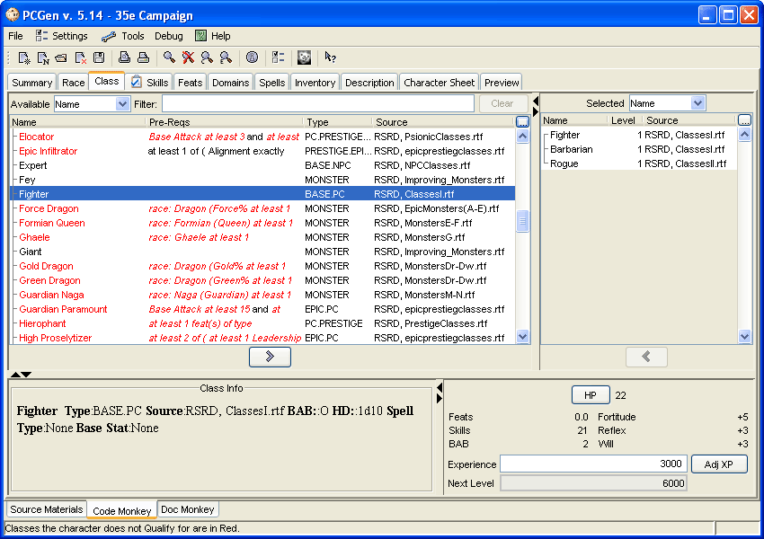

The table in the upper-left contains the list of "Available" classes. Next to the word "Available" is a selection box that lets the user pick which "view" to use. It is this view, which will be used to determine the structure of the table below it. The same is true for the "Selected" classes, which list the classes and levels of the character.
Add a level of a class by double-clicking on it, right clicking on it or clicking on it and the on the right-arrow button. Similarly to remove levels of a class by double-clicking on it in the "Selected" table, or by right-clicking on it there, or by selecting it and then clicking on the left-arrow button above the table. As elsewhere in PCGen anything not qualified for is in red italics. The Pre-Reqs columns list the pre-requisites of the classes.
The info-pane in the bottom-left will give you details about any class you click on - including its HD, BAB progression, save progressions and more.
The bottom-right section gives all the class-related information about the character. Click on the HP button to adjust them there.
The current number of optional feats to spend, the remaining skill points, base reflex, fortitude and will checks be also displayed.
The Experience field is editable and indicates how many experience points your character has.
The Adj XP button will bring up a small window where you can enter in the amount of XP you wish to add to your character.
There are "sliding dividers" between the class tables - click on this divider and slide it back and forth to the preferred location. There's also a divider between the upper-tables and the info sections below to drag up and down to change the viewing area of each. There's another divider between the info sections. This combination of 3 sliding dividers is common to most of the character-related tabs change how much screen real estate is devoted to each section. On most tabs there's a button, which has 2 circling arrows that will reverse the orientation of the views between horizontal and vertical. This gives many options on the layout of the tab.